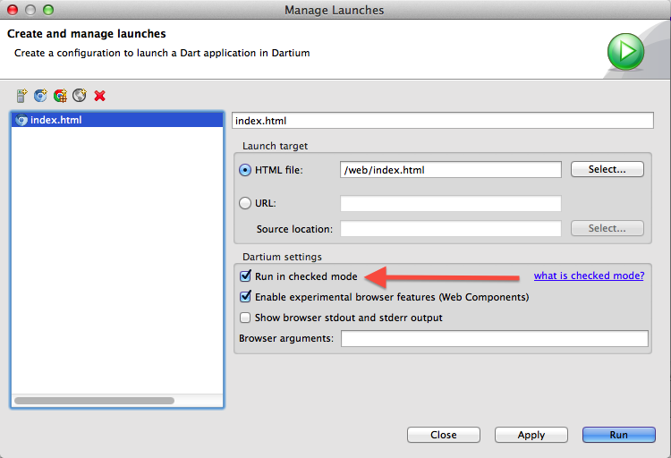

Benchmarking the Dart VM
Written by John McCutchan
October 2012 (updated November 2012)
Programmers often create benchmarks that exercise an important algorithm in a larger application. The point of the benchmark is to have an easy to run, reproducible stress test of the performance-sensitive algorithm. The benchmark verifies that changes to the algorithm are indeed improvements, and not regressions.
Benchmarking Dart
Dart can go really fast, but you have to give the VM time to optimize your code. Most benchmarks we’ve seen are short and to the point—so short that they don’t trigger the VM’s optimizer. This isn’t an issue with real-world applications, which execute long enough to be optimized. Read on to find out how to use the benchmark_harness library to properly run a Dart benchmark.
Use the benchmark harness
The Dart team has provided an official benchmark harness that ensures your benchmark follows the benchmarking procedures necessary for the Dart VM’s optimizer.
The harness is available as a pub package and is incredibly easy to use.
1. Add the following to your pubspec.yaml, and run pub install:
dependencies: benchmark_harness: ">=1.0.0 <2.0.0"
2. Copy the following template, which creates a class extending BenchmarkBase:
// Import BenchmarkBase class.
import 'package:benchmark_harness/benchmark_harness.dart';
// Create a new benchmark by extending BenchmarkBase.
class TemplateBenchmark extends BenchmarkBase {
const TemplateBenchmark() : super("Template");
static void main() {
new TemplateBenchmark().report();
}
// The benchmark code.
void run() {
}
// Not measured: setup code executed before the benchmark runs.
void setup() { }
// Not measured: teardown code executed after the benchmark runs.
void teardown() { }
}
// Main function runs the benchmark.
main() {
// Run TemplateBenchmark.
TemplateBenchmark.main();
}
Run in production mode
The Dart VM can run in two modes: checked and production mode. Checked mode is slower because the VM is checking types at runtime. Before benchmarking make sure that your code runs without issue in checked mode. If checked mode finds an issue, it will likely cause a performance problem in production mode. After making sure your program is correct, you should run your benchmark in production mode to get an accurate measurement of real world performance.
When executing from the command line checked mode is off by default and can be
turned on by passing the --checked command line flag. The editor has checked
mode on by default but can be turned off by going to the ‘Manage Launches’
window.

Summary
When benchmarking your application be sure to follow these three rules:
- Use the official benchmarking harness.
- Ensure the code does not raise any errors when run in checked mode.
- Run your benchmark in production mode.
If you follow these rules you will be able to accurately measure how fast your code runs. Once you’ve sped up your application, share your secrets on the mailing list. Happy benchmarking!